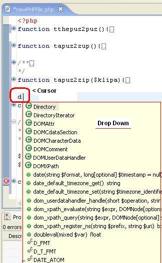
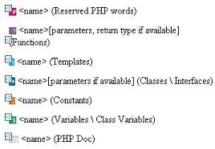
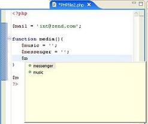
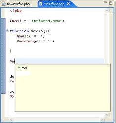
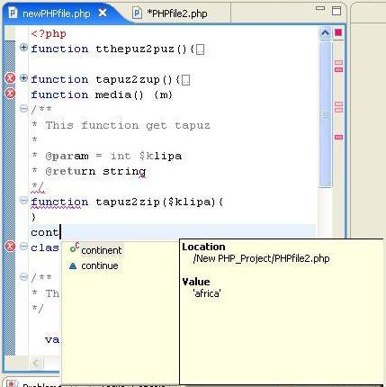
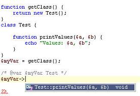

The Code Assist feature provides a context-sensitive list of pre-existing code elements that you can enter at the cursor point in order to complete code that you have partially entered. Code Assist works with types both PHP and HTML.
You can use this function to help insert or finish a tag, function or line of code in the editor as well as to select and insert templates and all of the following:
All PHP code elements (classes, functions, constants) where the user's intention is not obvious to Code Assist's algorithms.
PHP reserved words
Function return values (using PHPDoc support).
For PHP Doc arguments inside of PHPDoc blocks.
Nested functions
Constructor declarations.
Super classes and the interfaces to be implemented (in the context of class declarations ).
Class names - in "new", "instance of" or "catch" clauses.
All functions and data members of a class, variable or the return values of functions.
Elements defined as static.
Array keys of predefined PHP Arrays (including associative array keys for GLOBALS, _SERVER, _SESSION).
Registered templates.
HTML tags.
Note: The location of the cursor in the source file provides the context for Code Assist to offer suggestions for completion.
Note: Code proposals are presented in a drop-down menu from which the user can select.
Suffixes: Code Assist will insert the proper suffix for each of the following items:
Note: The cursor should be placed at the end of the inserted text.
Note: If the inserted code is a function that requires variables - place the cursor inside the parentheses.
A Function Parameter Hint window opens by placing the cursor between the parentheses of a function call. You can open the window manually by pressing (Ctrl+Shift+Space). The Hint window lists function's available parameters (shown bolded). Close the window by pressing the "Esc" key.
Includes HTML tags, attributes and attribute values.
Also lists names and syntax.
Open the file in the Editor and place the cursor at the location where you want to enter the code.
Enter the first few characters of the code.
Press Ctrl+Space.
The Code Assist drop-down menu will open and display an alphabetical list of the available code, starting with the characters you have entered.

Figure: - Code Assist Drop Down Menu
Each type of code element has a unique icon.

Figure: - Code Assist Icons
Select the desired code from the list mouse (double-click or Enter).
You can add code elements to Code Assist for use within the scope of the current active function, file or project.
Variables belonging to different scopes are not available to each other via Code Assist.
Create a PHP file as shown below.
<?
define('continent','africa');
$control
= ''
$mail = 'int@eclipse.org'
function media() {
$music = '';
$messenger = '';
$ --------- Location_1
}
$ ---------Location_2
?>
Place the cursor at the $, on line "7" marked by "Location_1". This is within function "media".
Type the letter "m" and click CTRL-SPACE to activate Code Assist. Code Assist will open with the options you have defined within the function.
The variable $mail (not within the scope of "media()" ) is not available.

Figure: - Adding Code to Code Assist
Next, place the cursor at the $, on line "9" marked by "Location_2".
Type the letter "m" and click CTRL-SPACE to activate Code Assist.

Figure: - Code Assist - Context Sensitive (within function)
Note: " Location_2" is not
part of function "media", therefore $music and $messenger are
not available here.
The variable "mail" is
potentially available to the entire file and therefore appears in the
Code Assist list when it is activated at "Location_2".
Because the cursor is not within the context of the function "media", Code Assist now opens without the "media's" variables ($music and $messenger ); they are available only when within the defining function.
Code elements defined in one file are available for use by other files within the same project. The example shown above was carried out in the PHP file named PHPfile2.php. The file was created as part of the project named "New_PHP_Project".
The code element defined in line ii of the PHP file PHPfile2.php [ i.e., the define: define('continent','africa') ] is available to all files in the same project. When the element is highlighted - Code Assist displays the original location of the code element and all other information available.

Figure: - Code Assist; New Elements Available within Same Project
By using a comment you can assign a variable its exact class value. This assignment will affect the code assist of this variable accordingly.
In the example below, '$myVar->' opens the code assist with 'Test' class function as defined in the comment.

Figure: - @var tag
Note: Without the comment, code assist will not be available for the function.
Use the following controls to navigate within the Code Assist drop-down menu.
The mouse wheel scroll becomes available
Select Preferences from the Window menu.
Go to PHP | Editor | Code Assist.
Select your configuration options.
In addition, you can set a preference that causes code assist to pop up automatically when certain characters are typed, as in HTML and XML.
Figure: - Setting Code Assist Preferences
Select Preferences from the Window menu.
Select Web and XML Files from the navigator, followed by HTML Files. Expand. Select HTML Source.
In the Code Assist group box, select the Auto-Activation check box.
Supply any additional characters that should trigger code assist .
If your cursor location enables code assist, a pop-up list of all available choices is displayed. For each of these choices, a brief description of the code is provided.
Complete the options for HTML Styles and HTML Source.